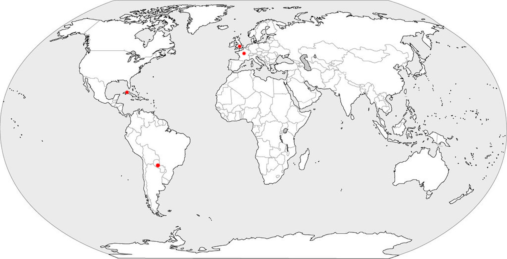

I’ve been very fortunate enough to travel to many cool places around the world. My favorites have been Paraguay, Cuba, London and Paris. Follow along to explore with me :)
June 2013: destination- London, England: My grandparents, aunt, and immediate family flew to London. We drank lots of tea,visited the queen and so much more!
July 2013: destination- Paris, France: From London my family and I took the Eurostar train to Paris. Our four day trip consisted of seeing the infamous Mona Lisa, going to the classic touristy places, and a whole lot of chocolate croissants.
March 2018 and 2019: destination- Tobati, Paraguay: My high school classmates and I took a fourteen day volunteer community service trip to one of the most special places I’ve ever been to. We worked closely with the Macchi School to improve the lives of disadvantaged youth.
June 2017: destination- Havana, Cuba: The people of Havana welcomed us with open arms, smiles, and a lot of music. We traveled to tobacco fields, saw historical sites and even drove around in vintage cars!

Travelling is something so special to me. I love learning about different cultures, trying new foods, exploring, and getting to know the locals. I will forever cherish these memories and fun times with my family and friends. For more information, pictures, and fun go to pages two and three. Enjoy and safe travels!
xx,
Molly